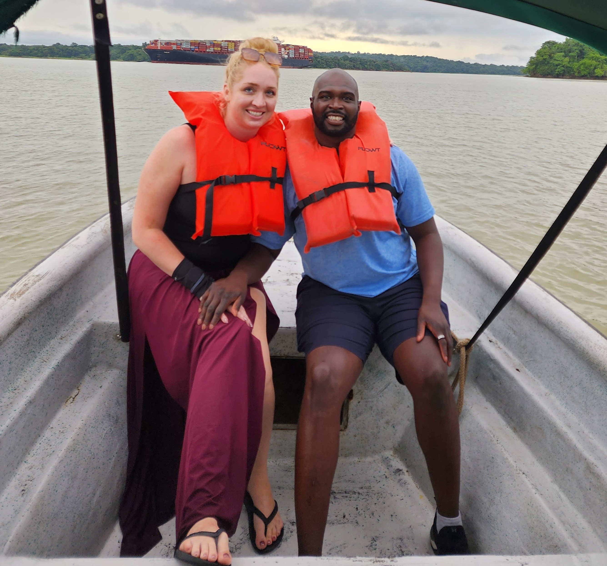

There's no doubt we love to travel and have been blessed to experience so many amazing places together. But some places leave more of an impression than others, and for us that place was Panama. We were enamored with the architectural design of the city, the cleanliness, the friendly locals, the food, and mostly we fell in love with the history and romance that is Casco Viejo. (AKA Casco Antiguo).

The Venue - Hotel La Compañía


Casco Viejo
Casco Viejo, Panama, established in 1673, is the historic district of Panama City. It was built after the original city was destroyed by pirates. Featuring colonial architecture, it reflects Spanish, French, and American influences. Declared a UNESCO World Heritage Site in 1997, it is now a vibrant cultural hub.
The City
Panama City, the capital of Panama, is a vibrant metropolis with a modern skyline, historical sites, and a lively nightlife featuring diverse entertainment from trendy bars to dance clubs and casinos. We recommend seeing a show at Emotions Dinner Theatre while in town!
The Canal
This is a must see when in Panama! There are multiple excursions that can take you to the locks or other various places around the canal. Another must is the Panama Canal Museum in Casco Viejo.
San Blas Islands
This is still on our Panama to-do list, but the San Blas Islands are beautiful and look like a fun day trip. We'd love to get a group together and go! Someone else plan it, please, and tell us when to show up.